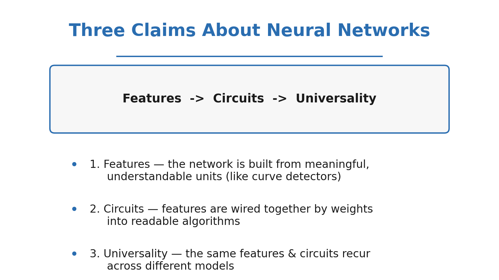
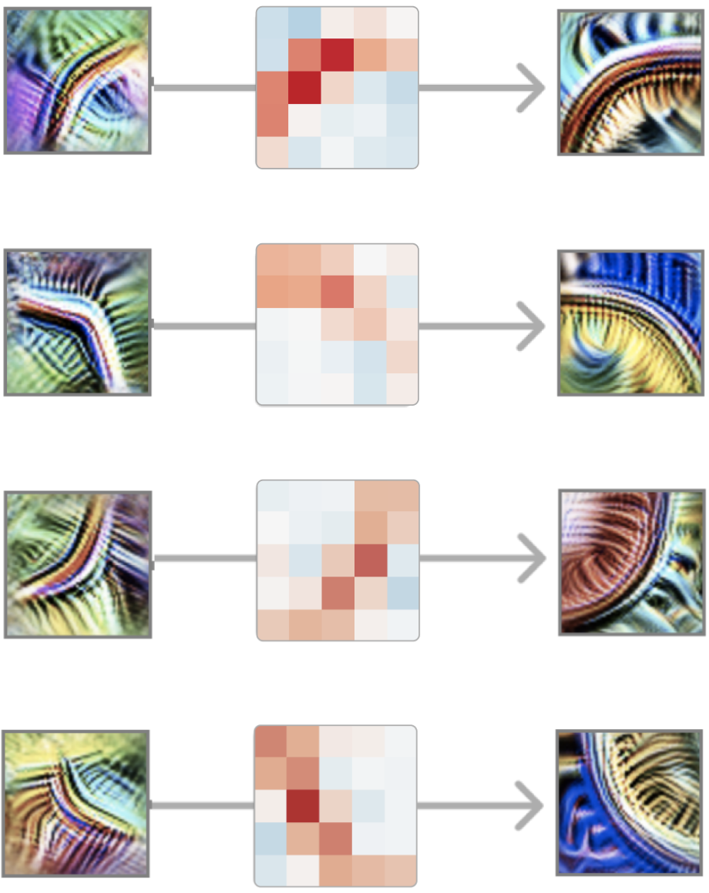
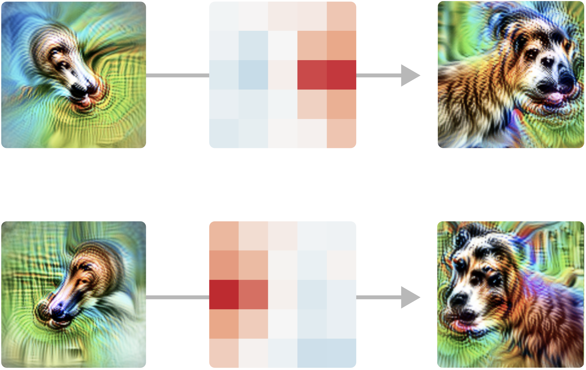
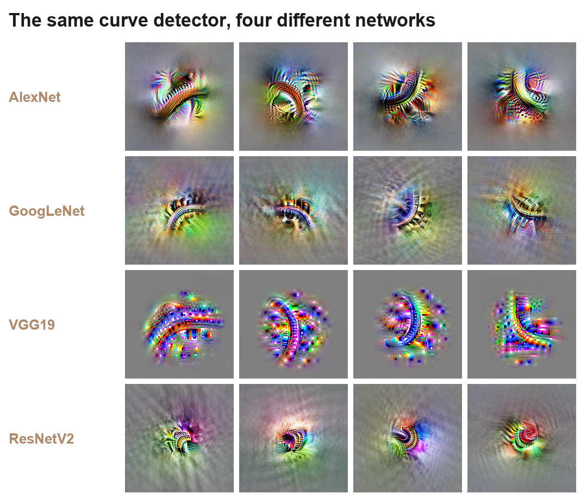
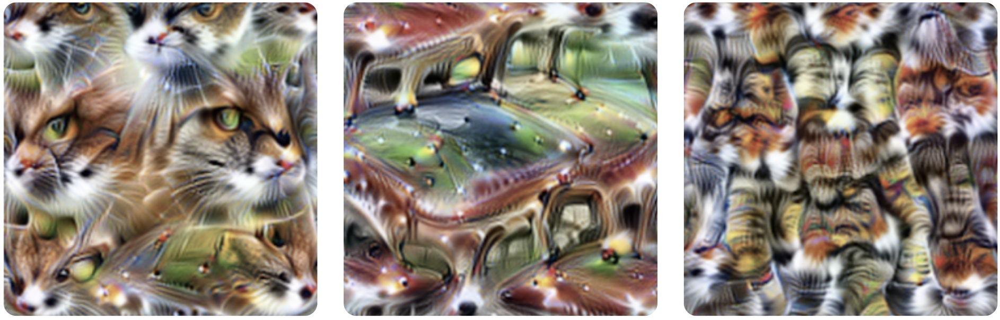
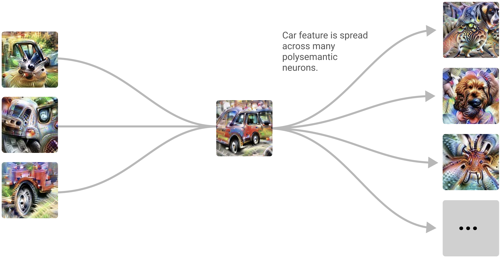
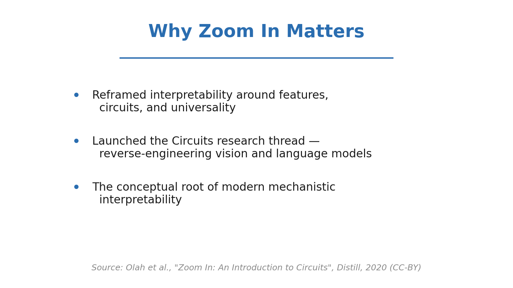

Zoom In: How to Read the Circuits Inside a Neural Network

For most of deep learning's history we've treated neural networks as black boxes: we judge them by what they output, not by what they do inside. But what if you could put a network under a microscope and read it the way a biologist reads a cell — neuron by neuron, weight by weight?
That's the premise of the circuits program in interpretability, laid out in the classic Distill article "Zoom In: An Introduction to Circuits." This post (and the video below) walks through its core ideas: that networks are built from meaningful features, those features are wired into circuits that implement real algorithms, and the same structures recur across wildly different models.
🎬 Watch the full 9-minute explainer:
▶️ Direct link: youtu.be/EjzaESBki5g
The Microscope Moment
Biology had a turning point when better microscopes revealed that all living things are made of cells. Suddenly you could study life at the level of its building blocks. Interpretability is reaching for the same kind of leap — and the microscope is feature visualization: optimize an input image to maximally excite a single neuron, and you get a picture of what that neuron is "looking for."
Point that microscope at a vision model and something striking emerges: the neurons aren't random noise. Many of them correspond to clean, nameable, human-understandable concepts.
Three Claims

The circuits program rests on three falsifiable claims:
- Features — networks are built from features, directions in activation space that correspond to understandable concepts.
- Circuits — features are connected by weights, forming circuits that implement meaningful algorithms.
- Universality — analogous features and circuits form across different models and tasks.
Let's take them one at a time.
Claim One: Features
The cleanest example is the curve detector. Across a vision model you find a whole family of neurons, each firing for a curve at a particular orientation — and together they tile the full range of angles.

How do we know it's really a curve detector and not wishful thinking? The article assembles converging evidence: feature visualization, dataset examples, synthetic stimuli swept across angles, hand-written tuning curves, and — crucially — the weights themselves, which connect to earlier edge detectors in exactly the arrangement a curve detector would need.
Equivariance

The curve detectors come as an equivariant set: rotate the input, and a different member of the family lights up. The network has effectively discovered rotation as a symmetry and built a detector for each slice of it — a recurring motif called equivariance.
Another clear feature

Curves aren't a one-off. High-low frequency detectors fire where a high-frequency texture meets a low-frequency one — a cue that's surprisingly useful for finding the boundary of an object against a blurry background.
Claim Two: Circuits
A feature on its own is just a noun. The real payoff is watching features wired together to compute something.

Because we can read the weights, we can read the algorithm. Take the car detector:

It draws on a window detector, a car-body detector, and a wheel detector — and the weights say windows on top, body in the middle, wheels at the bottom. The network learned the spatial layout of a car, written directly into its connections.
Pose invariance as a logical OR

An even more elegant case: a neuron that detects a dog's head regardless of which way it's facing. Upstream are two features — a left-facing head detector and a right-facing one. The pose-invariant unit reads positively from both. In other words, the weights implement a literal logical OR: left-facing OR right-facing → dog head. And it holds up on real images, not just synthetic ones.
Claim Three: Universality

Here's the part that suggests we've found something real rather than an accident of one architecture. Curve detectors show up again and again — in AlexNet, InceptionV1/GoogLeNet, VGG, and ResNet, trained separately, on different architectures. The same feature keeps being rediscovered, hinting at universal building blocks of vision.
The Honest Complication
It would be too tidy if every neuron were as clean as a curve detector. Many aren't.

Some neurons are polysemantic — a single unit fires for several unrelated things (say, cat faces, fronts of cars, and cat legs). Why would a network do that?
⚡ 60-second version — "What is a polysemantic neuron?"
▶️ Short: youtube.com/shorts/MJlIOMGj3Ec

The leading hypothesis is superposition: there are far more useful features than neurons, so the network packs multiple features into shared directions, tolerating a little interference. Polysemanticity is the visible symptom of this packing — and one of the central obstacles to fully reverse-engineering a network.
⚡ 60-second version — "What is superposition?"
▶️ Short: youtube.com/shorts/jht5lLU9CRk
Interpretability as a Natural Science
The methodological stance of the article is as important as any single result: treat interpretability like a natural science. Observe carefully, build up a catalogue of features and circuits, form hypotheses, and test them against the weights and activations — observation first, grand theories later.

Why Zoom In Matters
If features, circuits, and universality hold up, then neural networks aren't inscrutable after all — they're intricate objects we can study, name, and eventually understand. That's not just intellectually satisfying; it's the foundation for AI safety, where understanding why a model does something matters as much as what it does.
⏱️ Chapters
| Time | Section |
|---|---|
| 0:00 | The Microscope Moment |
| 0:34 | The Microscope: Feature Visualization |
| 1:11 | Three Claims |
| 1:56 | Claim One: Features |
| 2:33 | How We Know It's a Curve Detector |
| 3:06 | Curves at Every Angle (Equivariance) |
| 3:37 | Another Clear Feature: High-Low Frequency |
| 4:05 | Claim Two: Circuits |
| 4:52 | Reading a Circuit: The Car Detector |
| 5:22 | A Circuit for Pose Invariance |
| 5:44 | Implementing OR in Weights |
| 6:09 | And It Holds Up on Real Images |
| 6:33 | Claim Three: Universality |
| 7:13 | The Complication: Polysemantic Neurons |
| 7:37 | Superposition |
| 8:04 | Interpretability as a Natural Science |
| 8:33 | Why Zoom In Matters |
Source: Chris Olah, Nick Cammarata, Ludwig Schubert, Gabriel Goh, Michael Petrov & Shan Carter, "Zoom In: An Introduction to Circuits," Distill (2020). Published open-access under CC-BY 4.0; all figures above are from the article and © the authors, used with attribution.
We're brand new to YouTube — if this helped, please subscribe and like; it genuinely keeps these explainers coming. Thanks for reading! 🙏
Cite this post
Auto-generated. Verify for your institution's requirements.